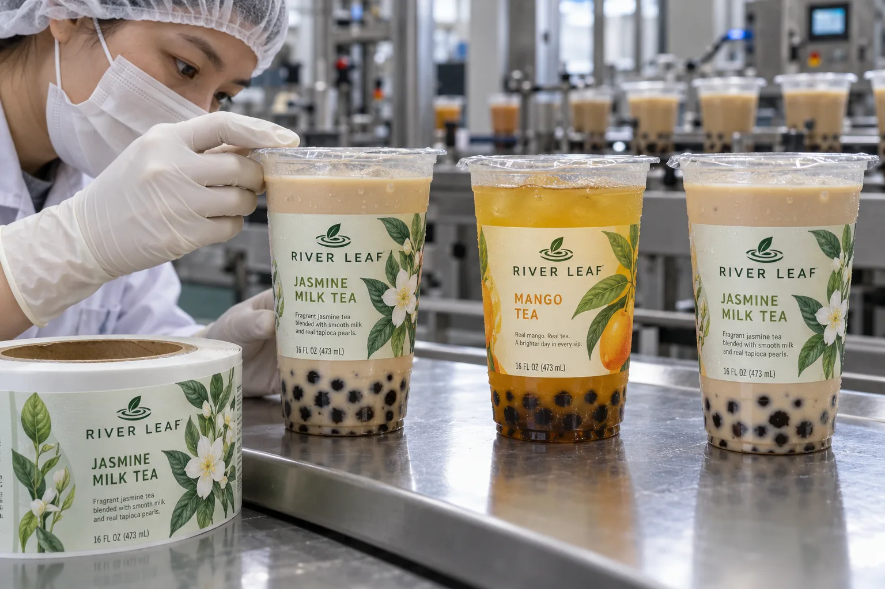

Start at the sealing head, not the logo
If a beverage buyer shows me a cup mockup with the label touching the lip, I stop at the sealing station. The film must bond to its intended flange and the consumer must still find the opening edge. A sidewall label is not a substitute for a tested seal. Move the artwork below the working rim first; then decide how much printable wall remains.
HERMA's food-labeling equipment overview makes clear that labeling equipment has to suit special package and label functions. On a chilled drink cup, I would also distinguish moisture resistance after application from initial adhesion on a wet surface. Avery Dennison's cold/wet application bulletin explains why condensation can reduce pressure-sensitive tack. It describes a particular construction, not a universal cup-label guarantee.
Two operations make different compromises
Imagine a composite shop chain that prints a few cup flavors and seals each filled cup in-store. A small front label can be easy for staff to position, but the flavor name must remain visible even after ice and condensation obscure part of the cup. I would trial hand-applied labels on the coldest cup customers actually receive.
A composite ready-to-drink packer uses a continuous labeling and sealing line. It may prefer a controlled roll with a larger branded panel. Here the risk shifts to changeovers, sensor detection and consistent distance below the flange. I would ask operators to run a short production-speed trial rather than approve a static bench sample.
Measure the cup after it is filled
Check the straight portion of the sidewall, cup taper, sleeve or holder contact points, and the film overhang. If pearls or opaque milk tea hide the back of a clear label, test artwork contrast on the actual drink. Keep the label off the heat-seal area and do not cover any spot needed for coding or cup handling.
| At the line | Record before approval |
|---|---|
| Sealing | Flange clearance and film peel path |
| Labeling | Before/after fill sequence and cup surface condition |
| Chilling | Condensation and print legibility |
| Changeover | Flavor name, artwork revision and roll identity |
Our buying view
Do not sell the cup from a flat proof
The practical proof is one filled, sealed, labeled cup taken through the intended chilling and handling path. I would sacrifice a little label height before I would risk a poor seal or a flavor mix-up.
What to send to the label supplier
- Actual cup, sealing film and finished filled samples.
- Sidewall dimensions, flange width and lid overhang.
- Application sequence, method and line speed.
- Drink colors, flavors and artwork revision list.
- Cold storage and condensation conditions.
Compare this with condensation on glass beverage bottles. If a full wrap is planned, also check taper and wrinkle risks.
Frequently asked questions
How close can a label sit to a heat-sealed cup rim?
Set clearance from the actual cup and sealing equipment, then confirm the film seal and opening tab are unobstructed.
Should labels be applied before or after filling?
Choose from the real line sequence. Surface moisture, handling and product identification at each step determine what can be trialed.
Will a waterproof film solve condensation?
Film can help protect the printed face, but initial adhesion to a wet cup is a separate issue that needs a line test.
Related buyer guides
Review your label specification
Send package photos, label dimensions, material details, quantity and application conditions. Include good and failed samples where possible so the discussion starts with evidence.
Continue with Hot Coffee Cup Labels: Place Them Above the Sleeve for a focused purchase checklist.